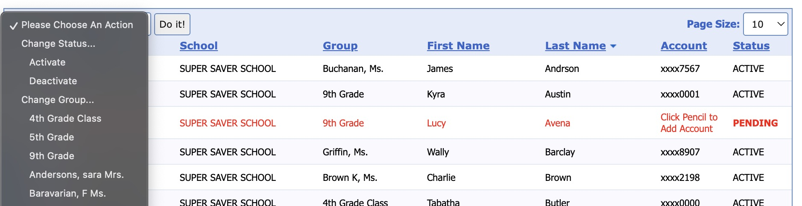

Begin a New School Year
Volunteer Guide — Returning Program Coordinators
Welcome back! This guide walks you through the steps needed to restart your school banking program for the new school year. Complete these steps before your First Deposit Day.
On This Page
1. What Resets Automatically
School Savings performs the following actions automatically at the start of each new school year:
- Deposit totals are zeroed out. Each student's deposit history from the prior year is archived. Running totals in the system start at $0.00 for the new school year. Students' actual bank account balances are not affected — this only resets the in-program tracking.
- The school year calendar resets. Deposit sessions for the new year begin on September 1st and run through the second week of June.
2. Promote Students to the Next Grade
Students should be moved up one grade level so the system reflects their current school year. Placing students in their grade, teacher, or group facilitates Points calculations for Contests and special School Savings events.
How to Promote Students. Refer to How to Reassign Teachers below.
- Log in at www.schoolsavings.com with your Volunteer credentials.
- Navigate to Students → Student Manager Check the boxes of students you want to move to the SAME teacher.
- From the drop-down, Please Choose an Option menu, select the NEW teacher for these promoted students. If the teacher is not listed, you need to add him or her first. See page 5 of the QuickStart Guide for instructions on adding a new teacher. The QuickStart Guide is available in the Tools/Downloads/User Manuals and Materials section of the School Savings website.
- Review the resulting grade list and DEACTIVATE any students who have left the school or moved on beyond the highest grade served.

3. Assign Students to New Teachers
After promotion, each student's homeroom teacher assignment should be updated to reflect their new classroom.
How to Reassign Teachers
- Obtain a current class roster from the school office before you begin. This is the most accurate source for new teacher assignments.
- Go to Students and filter by grade level or group to locate students who need new teacher assignments.
- Select each student, click the dropdown Please Choose and Option and choose their new teacher from the dropdown. Save after each change. You may move several students to the same teacher at once by checking their boxes and selecting the new teacher from the dropdown as stated previously.
- Confirm all teachers listed in the system match current staff. Add new teachers and remove teachers who are no longer at the school under Group Details.
4. Add New Students
Kindergarteners and any students new to the school need to be enrolled before they can make deposits.
How to Enroll a New Student
- Distribute Account Enrollment Packets to families of new students. Completed packets must be returned before the student can be added.
- Go to Students → Add Student.
- Enter the student's name, grade, teacher, and account information as shown on the enrollment packet. The minimum deposit is $0.01 and there is no fee to participate.
- Save the record. The student is now eligible to make deposits at school.
5. Reactivate Inactive Students
Students who did not participate last year, or who were manually set to inactive, need to be reactivated before they can deposit again.
How to Reactivate a Student
- In Students, set the Status box to list Deactivated Students.
- Locate the student by name or account number.
- Click the box next to the student's name and select Activate.
- Update their grade and teacher assignment for the new year, if necessary and save.
6. Super Saver Points
Students earn 10 Super Saver Points for each deposit made at school, regardless of the amount. Points accumulate toward rewards in the national and local awards programs.
Contests and Incentives
- Announce the new year’s contests and incentives to students and families to FIRE-UP participation on First Deposit Day.
- Set up any new contests under Contests & Incentives at the Banking station or on the school's website.
7. Prepare for First Deposit Day
First Deposit Day sets the tone for the whole year. Advertise it widely!
- Confirm your deposit day schedule with the school office (before school or during lunch break).
- Ensure the deposit computer has internet access and is available at the agreed time each week.
- Send home a reminder flyer announcing First Deposit Day and the contest for new depositors.See Tools/Downloads for Flyers
- Confirm the lead Volunteer knows the current deposit-delivery procedure to the bank branch.
- Log a test session at www.schoolsavings.com to verify your login credentials are working.
- Contact us at support@schoolsavings.com or 888-787-7728 if you encounter any technical issues.
8. Frequently Asked Questions
Q. The system shows $0.00 for all students. Is something wrong?
No — this is expected. School Savings zeros out program deposit totals at the start of each school year. Actual bank account balances are not affected.
Q. I tried to add a student and got "Account Already Exists." What do I do?
The student has an existing record from a prior year. Do not create a new account. Filter Students to show Deactivated accounts, find the student, and reactivate their record. Then update their grade and teacher for the new year.
Q. How do I handle a student who moved to our school from another School Savings school?
Contact School Savings support at support@schoolsavings.com. The student may already have an account. School Savings or a Bank Coordinator can transfer the student to his new School School so his record will be preserved.
Q. A teacher left the school. What happens to their students?
Reassign all students currently linked to the departing teacher to their new classroom teacher. Then remove or deactivate the departing teacher's record.
Q. Can a student make deposits on the same day I enroll them?
Yes. Once you save a new student record in the system, they are eligible to deposit immediately if they already have a bank account. The minimum deposit is $0.01.
Q. When are deposits available in the student's bank account?
Deposits are currently available within two business days. School Savings is an Authorized FedNow® Service provider, so instant availability is also available for financial institutions on FedNow.
Q. Our first deposit day is before September 1st. Can we still run a session?
Contact School Savings support to confirm your start date. Officially the program year begins September 1st, but your sponsor bank may have flexibility for early sessions.
Q. Who do I call if I have a technical problem on deposit day?
Call School Savings at 888-787-7728 or email support@schoolsavings.com. Support is available during school banking hours.